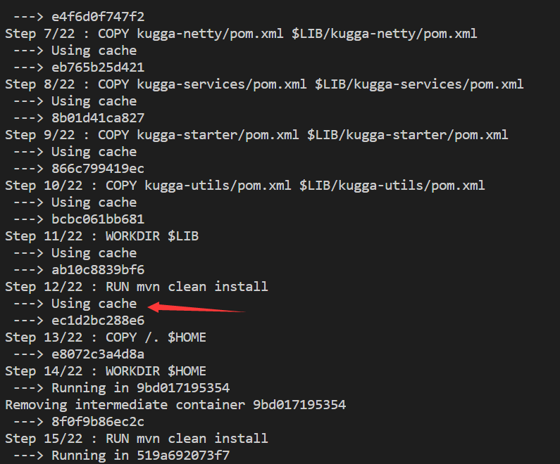

本文不针对刚接触Docker和DevOps的初学者，一些初级资料可以查阅——https://yeasy.gitbooks.io/docker_practice/introduction/what.html
在一个CI/CD工作流中，我们在本地修改代码并提交后，CI系统会自动构建我们的代码并运行单元测试来验证本次提交的可行性。而这个构建很多时候为了屏蔽平台以及环境的差异性，往往会使用Docker来构建。构建一个Docker image绕不开的话题就是Dockerfile脚本该怎么写。不同的项目事实上编写的Dockerfile遇到的痛点往往不一样。本文针对的痛点是——构建速度慢。针对这个问题，我们首先得了解一下Docker build中的cache机制。
Docker build中的cache机制
我们知道在构建一个Docker image的时候，Dockerfile中每一条命令执行完后，都是会构造出一层新的layer附加到镜像上。但是这样的话，我的每个Docker image大小都差不多有500M左右，那么来个50个左右一款入门级服务器岂不是就存不下了？
事实上在构建一个新的镜像或者拉取一个新的镜像的时候，由于我们是分层逐步构建，所以在构建每一层的时候，Docker都会检验这一层是否已经存在了？如果这一层已经存在了，那么他就会复用已经构建好或者拉取好的该层，也就不必花时间重复构建了，自然也不会重复占用内存。

但是这里有一个问题，Docker是如何判断一个即将被构建但是还没有被构建的镜像已经存在的呢？这个判断已经存在的标准是什么？
cache机制是如何实现的
如果你熟悉Docker的话，Docker的镜像实际上是由镜像层文件系统内容和镜像Json文件组成，每一个Docker镜像都含有一个唯一的16进制12位的image id。这是下面的基础
假设我有这样一个Dockerfile
From centos:7 |
对于这样一个Dockerfile来说。
假设以下内容为上述Dockerfile的第一次构建
有一个入口命令叫做 From，我们通常会引用一个父镜像来作为即将构建的镜像的基础环境。这个父镜像有一个唯一的image id和唯一对应的json文件。这个时候我们执行 docker build 命令时，Docker Daemon就会获取centos:7的镜像ID，并提取这个centos:7这个镜像json文件中的内容，作为新的镜像的基础json内容，并把该镜像作为构建 run yum update -y 该层的基础。
接着我们来到了 RUN yum update -y 这条命令，这条命令base在From命令之上，他会对文件系统的内容做一次更新，所有被更新的文件，都会保留在新构建的镜像层。并且在现有json的Cmd属性中更新一条 yum ipdate -y 命令。这样就完成了一条非From命令的构建。其实就是产生了一个新的镜像。新的镜像是上一条命令产生镜像的子镜像。centos:7就是第二条命令构建出镜像的父镜像。
所以有了这么一个想法——我们是否可以在构建 Dockerfile 一条命令之前，就知道即将构建出的新的镜像的形态呢？
我们通过对第一次构建的分析，大致知道了，标志一个镜像有以下三个特点。
- 父镜像的ID。
- 父镜像向自己构建时，修改的Json文件内容，在上述例子中就是Cmd属性中增添了一条新的
yum update -y命令。 - 镜像层文件系统的更新，对应上述例子就是运行
yum update -y后文件系统的更新。
由于第三点是更新后的，在我们没有构建出镜像时无法比较。所以我们其实可以认为，在下一次执行上述Dockerfile的第二条命令前，假如
- 有一个镜像的父镜像为
centos:7。 - 有一个镜像的json文件相比父镜像也只在Cmd属性中添加了
yum update -y命令。
那么我们就可以认为即将构造出的镜像已经存在，可以使用已经构造好了的缓存，无需重复构建了。
其实这么一波分析下来，我们已经大致知道了cache机制是这么工作的了：在执行命令构造一个镜像前，遍历本地所有镜像，若发现有镜像与即将构建出的镜像一致（这里的判定就是通过1，2两点判断的）时，将找到的镜像作为 cache 镜像，复用 cache 镜像作为构建结果。
这种树状的镜像关系决定了，如果我修改了第N次命令，那么所有>N的命令都无法使用缓存，因为从第N个分支开始他们就不存在一棵已有的枝干上了。
但是其实如果仔细想还是有问题的。如果我有如下Dockerfile
From centos:7 |
starter.sh是我在外部的一个文件，我的第三条命令没有变，但是starter.sh中的内容却变了，这个时候单单按照上面的分析，我们是可以继续使用构建好了的cache的。如果这样的话我们修改了starter.sh的内容，但是最后打包出来的镜像运行结果却不是我们修改后的预期，所以这是不合法的。对于这些根据文件内容来决定表现结果的命令，Docker 采用的方式是对这些文件内容做一个checksum（校验和），如果所有校验和相同，则判断可以使用缓存。若是文件有变动，则不可以使用缓存。
RUN 命令存在外部依赖，对于第二个
yum update -y命令来说，随着时间的推移，外部的软件源会越来越多，不同时间点执行的虽然都是相同命令，但是更新的文件数量却不一样。对于这种情况，我们可以使用参数--no-cache确保获取最新的外部依赖，命令为docker build --no-cache -t image_name。
利用Docker build 中的cache机制来加速Docker image的构建
什么场景下需要加速Docker image的构建呢？
举个生产环境中的例子：
我们有一个maven项目对应的Dockerfile（未使用cache机制）
FROM maven:3-jdk-8-alpine |
对于这样一个maven项目，我们在运行 mvn clean install 时，会先查看本地是否有依赖包，然后再查看远程仓库是否有依赖包，最后是查看中央仓库。在本地运行 mvn clean install 会非常快，因为要是本地没有，从远程下了之后，之后每一次执行都是从本地来导包，不需要长时间的网络I/O等待时间。但是在镜像中构建时，每一次构建镜像都是即开即用即弃的，这意味着每一次构建容器都需要花费大量时间在下载依赖包上。我的一些项目在不利用cache机制写Dockerfile前，构建一次镜像需要半个小时，这真的一点都不敏捷。
那么如何利用好Docker的缓存机制呢来解决这个每次构建都需要下载依赖包的问题呢？
我们其实有 2 个原则
- 把需要变动频率高的文件才可以执行的命令往后放，这样不会让缓存机制失效。（这里其实特别像数据库中的事务操作准则，在一个事务中，执行时间长的操作需要尽可能放后，这样这条耗时长的操作影响的行持有行锁时间才会短）
- 利用变动频率少的文件，来做掉可以影响耗时的工作。让其可以利用缓存。
有了上述两个原则，我们分析一个maven项目，maven项目中变更较少的其实就是 pom.xml 文件，而耗时较长的下载依赖包其实也就是由 pom.xml 来决定的。
那么其实我们可以先把根目录下的 pom.xml 文件复制到一个新的文件夹中，假设是 /lib，如果是个多模块的maven项目，就在 /lib 下创建和子模块同名文件夹，然后将子模块的pom.xml 复制进去 ，最后在 /lib 下执行 mvn clean install。
这样的话。我们利用了改变较少的 pom.xml 就下载好了项目需要的所有依赖包到本地了。并且这个镜像是可以被缓存下来并再次利用的。
接下来我们再在项目路径下运行mvn clean install，这个时候由于依赖包已经在本地已经下载好了，所以漫长的网络I/O等待，就可以直接编译了。
我们修改后的 pom.xml 如下
FROM maven:3-jdk-8-alpine |
有了我们优化过后的 Dockerfile 文件，构建镜像的时间从半小时缩短到了两分钟。这才叫敏捷！类似于需要花大量时间在下载依赖包的项目其实都可以采用类似的解决方案，只要遵循上面的两点原则即可。